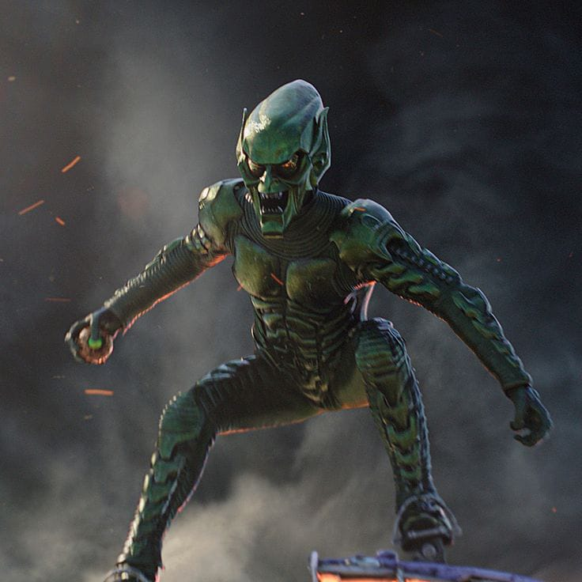
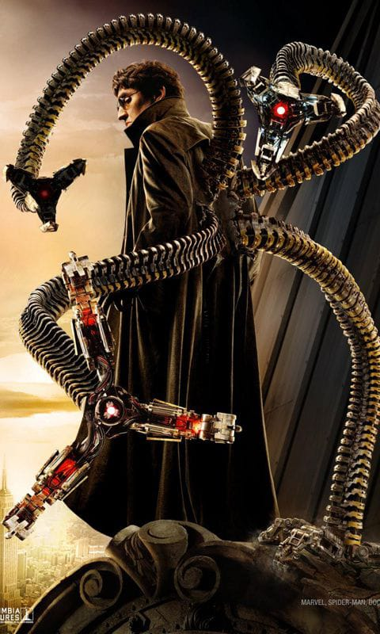
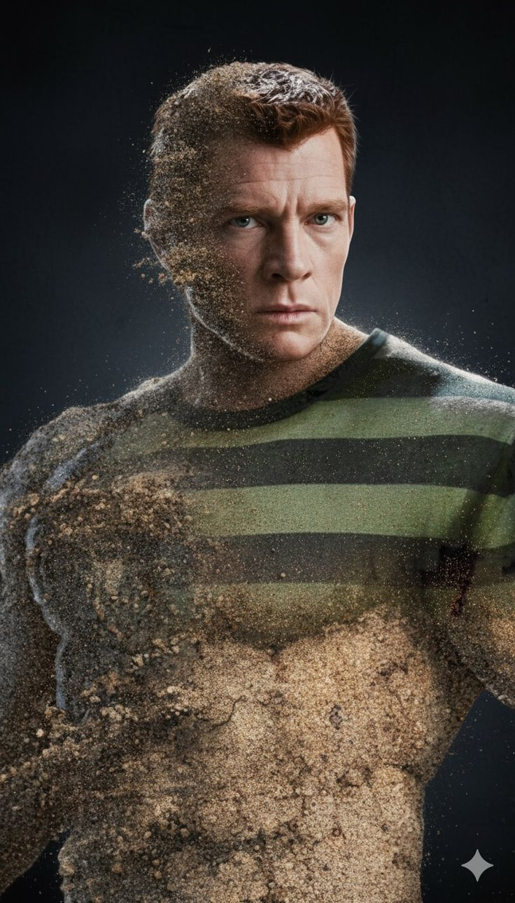
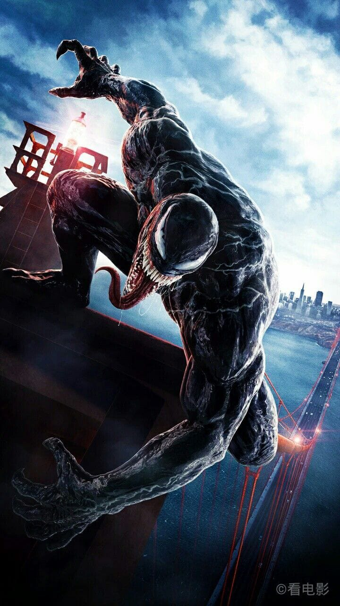
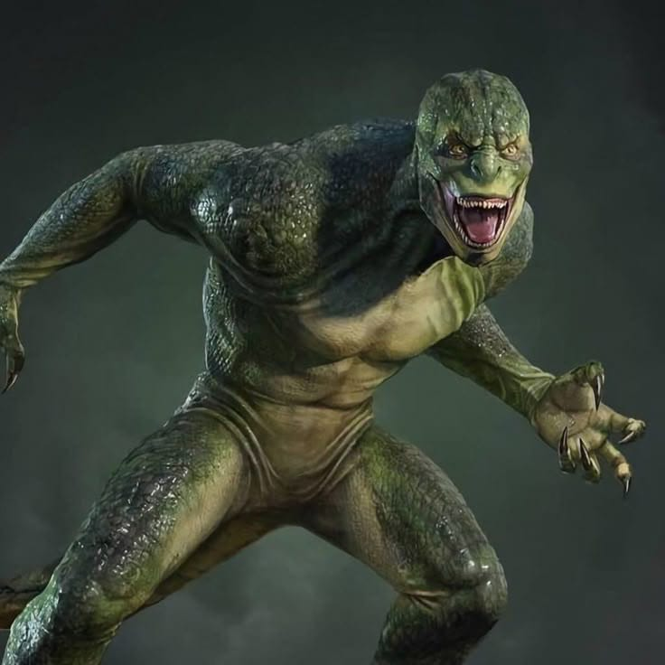
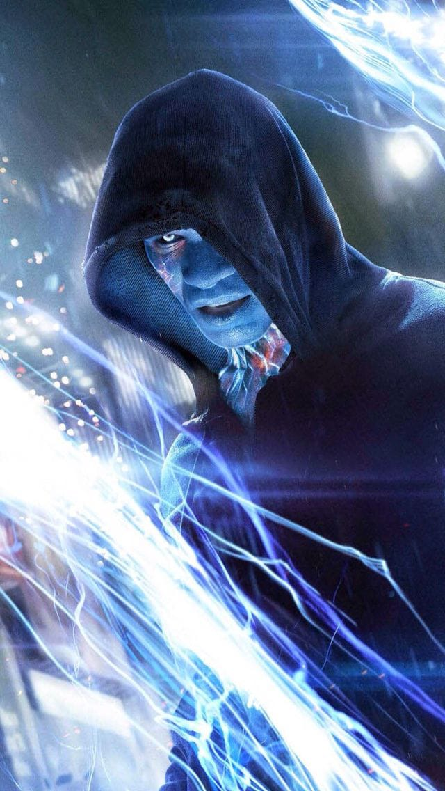
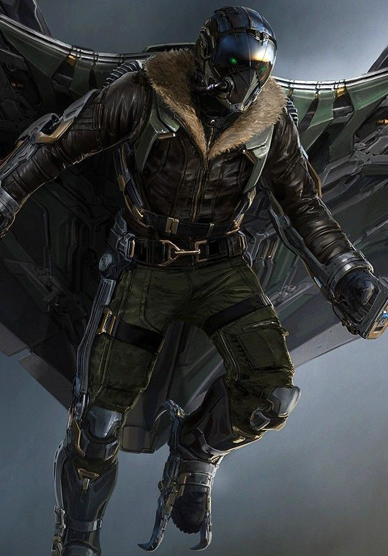
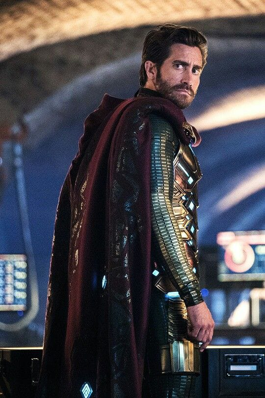

Duende Verde

Willem Dafoe
Aparece em Homem-Aranha (2002). Norman Osborn, empresário que vira o Duende Verde depois de um experimento e voa com um planador.
Saiba maisTudo sobre o Homem-Aranha
Todo herói precisa de bons inimigos. Conheça os vilões que enfrentaram o Homem-Aranha no cinema.

Aparece em Homem-Aranha (2002). Norman Osborn, empresário que vira o Duende Verde depois de um experimento e voa com um planador.
Saiba mais
Aparece em Homem-Aranha 2 (2004). Otto Octavius, cientista que fica preso a quatro tentáculos mecânicos depois de um acidente.
Saiba mais
Aparece em Homem-Aranha 3 (2007). Flint Marko, criminoso que se transforma em um homem de areia depois de um experimento.
Saiba mais
Aparece em Homem-Aranha 3 (2007). Eddie Brock, jornalista que se une a um simbionte alienígena.
Saiba mais
Aparece em O Espetacular Homem-Aranha (2012). Curt Connors, cientista que quer regenerar o próprio braço e vira um lagarto gigante.
Saiba mais
Aparece em O Espetacular Homem-Aranha 2 (2014). Max Dillon, engenheiro que vira eletricidade viva depois de um acidente.
Saiba mais
Aparece em De Volta ao Lar (2017). Adrian Toomes, que usa tecnologia alienígena para criar um traje com asas.
Saiba mais
Aparece em Longe de Casa (2019). Quentin Beck, mestre das ilusões que usa drones e hologramas para enganar a todos.
Saiba mais